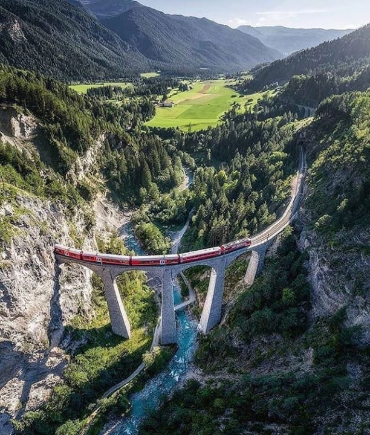
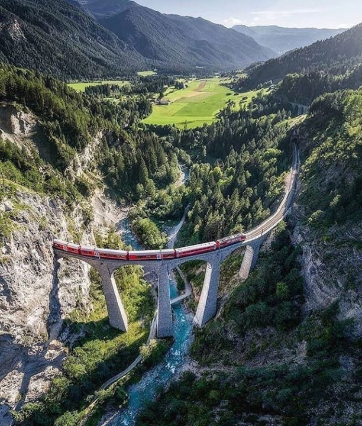

Ruta TOP 2
SUIZA – EXPRESO DE BERNINA
La travesía de los Alpes con el Bernina Express es, sin duda alguna, una de las más espectaculares. En el camino, el Bernina Express pasa por el viaducto de Landwasser de 65 metros de altura, símbolo del Ferrocarril Rético y declarado Patrimonio de la Humanidad por la Unesco. En total, se viaja desde Coira hasta Tirano a través de 55 túneles y sobre 196 puentes. En el recorrido, los viajeros pasan por lugares espectaculares como la curva de Montebello con vistas al macizo de Bernina. O el glaciar Morteratsch, los tres lagos Lej Pitschen, Lej Nair y Lago Bianco, el Alp Grüm y el viaducto circular de Brusio.
LA RUTA EN NÚMEROS
- Tiempo de viaje: 4 horas de inicio a fin
- Distancia: 76 millas (122 km) de vía
- Elevación máxima: 7.392 pies sobre el nivel del mar
- Lo más destacado: 55 túneles, 196 puentes y viaductos
Desde Zurich se puede tomar el Intercity directo a Chur (1 hr y 15 min) o trenes regionales directos.
La ruta del Bernina Express funciona todo el año. Visítala en primavera para ver campos verdes y pueblos agrícolas con toda su belleza colorida.
Visítala durante el invierno, cuando las principales vistas son los lagos congelados, las montañas cubiertas de nieve y los esquiadores locales. En pocas palabras, ¡cualquier época es buena para hacer este viaje!
Se puede aprovechar y visitar Zúrich en un día, antes de coger el tren expreso de Bernina o después. Pese a ser la ciudad más grande que ver en Suiza, se pueden visitar sus imprescindibles de forma rápida. Se puede empezar el dia paseando por la orilla del lago Zúrich, Conocer la bonita Ópera de Zúrich, fue la primera sede teatral permanente desde su inauguración en 1834. Perderse por Niederdorf, la zona más bonita del centro histórico de Zúrich, ver el reloj más grande de Europa en la fachada de la iglesia de San Pedro,..
 

Ruta TOP 3
BRUSELA- -BRUJAS-GANTE
¿A quién no le apetece una escapadita por lo mejor de Flandes? Estamos hablando de un clasicazo europeo que debes hacer al menos una vez en la vida. Ciudades encantadoras surcadas por canales, monumentos que quitan el hipo y la capital belga, sede de las grandes instituciones de la Unión Europea
Las conexiones entre Bruselas, Brujas y Gante son muy buenas. Decenas de trenes diarios que nos permiten movernos por el país cómodamente.
En Bruselas La Grand Place es maravillosa. Un conjunto de edificios gremiales del siglo XVII entre los que destaca el magnífico Ayuntamiento. Los remates dorados del conjunto arquitectónico resplandecen con los rallos de sol. Y de noche es también todo un espectáculo. Hay que reconocer que lo han bordado con la iluminación. Visitar la Catedral de San Miguel y Santa Gúdula. De hecho, indican que guarda cierta similitud con la Catedral de Notre Dame de París. También merece la pena acercarse hasta la iglesia de Notre Dame Du Sablón, al Palacio de la Bolsa, las Galerías Saint Hubert y la plaza de Santa Catalina.
Ya algo más alejado del centro y, si dispones de dos días, no te puedes perder Parlamento Europeo, el Palacio Real de Bruselas, el Parque del Cincuentenario y las vistazas que se obtienen desde la Basílica del Sagrado Corazón. Por supuesto, tampoco puede faltar en nuestra ruta una visita al gran símbolo de la ciudad, el Atomium.
Ni se te ocurra abandonar la capital sin hacer la ruta del cómic de Bruselas, tomarte una cerveza en el Delirium o en cualquiera de las cervecerías del centro, o comerte uno de los riquísimos gofres del Maison Dandoy. Oye, que con tantos planes a mi ya me apetece volver.
Brujas es uno de los destinos con más encanto de Europa. Destila romanticismo en cada callejón, en los canales y en la belleza de su arquitectura. ¡De cuento!. La estación de tren de Brujas está muy cerca del centro histórico, el cuál ha sido declarado Patrimonio de la Humanidad. No te puedes perder la plaza Grote Markt con sus preciosos edificios rematados por el Campanario Belfort, una torre a la que se puede subir para ojear las vistas, la plaza Burg en la que destaca la Basílica de la Santa Sangre, entre otros monumentos, la plaza Jan Van Eyck, el Parque Minnewater y su encantador Lago del Amor…
La carga monumental de Gante es brutal, de hecho es la ciudad belga con mayor número de edificios históricos de Flandes. Se puede admiar las impresionantes vistas desde el Campanario Belfort, por el coqueto Castillo de los Condes de Flandes, por la Catedral de San Bavón, la Iglesia de San Nicolás, también por la de Santiago y por la colorida plaza de Vrijdagmarkt.
Si te han gustado los canales de Brujas, los canales de Gante no van a ser menos. Especialmente bonito es el canal que discurre paralelo a las calles de Graslei y Korenlei. La arquitectura tradicional de las casas de esta zona no puede ser más hermosa, de día y también con la iluminación nocturna. Un paseo que nos llevará hasta el puente más bonito y fotografiado de la ciudad, el puente de San Miguel.